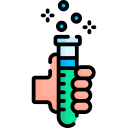
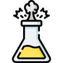
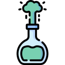

1
Tipo de Reacción: Síntesis
Dos o más sustancias se combinan para formar un compuesto más complejo.
2H
2
+ O
2
→ 2H
2
O
Tipo de Reacción: Descomposición
Un compuesto se descompone en dos o más sustancias más simples.
2H
2
O → 2H
2
+ O
2
Tipo de Reacción: Sustitución

Un átomo o grupo de átomos de una sustancia es reemplazado por otro átomo o grupo de átomos.
2KCl + H
2
SO
4
→ K
2
SO
4
+ 2HCl
Tipo de Reacción: Doble Sustitución
Los cationes y aniones de dos compuestos se intercambian entre sí para formar dos nuevos compuestos.
NaCl + AgNO
3
→ NaNO
3
+ AgCl
Tipo de Reacción: Neutralización
Reacción entre un ácido y una base que forma agua y una sal.
HCl + NaOH → NaCl + H
2
O
Tipo de Reacción: Redox
Transferencia de electrones entre reactivos, donde uno se oxida (pierde electrones) y otro se reduce (gana electrones).
2Mg + O
2
→ 2MgO
Ácido Clorhídrico
Ácido fuerte, corrosivo y soluble en agua. Se encuentra en el estómago humano y se utiliza en la industria química.
Sulfato de Cobre
Sal inorgánica de color azul utilizada en aplicaciones químicas y como fungicida.
Dióxido de Carbono

Gas incoloro, denso y no inflamable. Se produce en la respiración celular y en la combustión completa de carbono.
Sulfato de Sodio
Sal inorgánica sólida, soluble en agua, utilizada en la fabricación de vidrio, papel y detergentes.
Estequiometría

Rama de la química que estudia las relaciones cuantitativas entre los reactivos y productos en las reacciones químicas.
Catalizador
Sustancia que aumenta la velocidad de una reacción química sin ser consumida en la reacción.
Girar